A few key elements to understand extreme event attribution studies.
Soulivanh Thao (LSCE),
Philippe Naveau (LSCE), Paula Gonzalez (LSCE), Julien Worms (UVSQ),
Aurelien Ribes (CNRM), Julien Cattiaux (CNRM)
World Weather Attribution: Pacific Northwest 2021 Heatwave
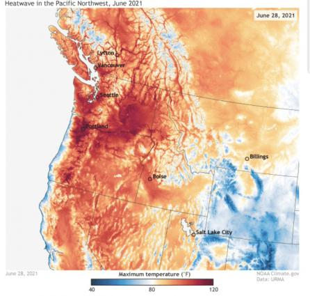
"extremely rare (a 1 in 1000 year event) in today's climate"
"virtually impossible without human-caused climate change."
"at least 150 times rarer without human-induced climate change."
"2°C hotter than it would have been [...] at the beginning of the industrial revolution (when global mean temperatures were 1.2°C cooler than today)."
Attribution of climate change
Attribution
The process of evaluating the relative contributions of multiple causal factors to a change or event with an assignment of statistical confidence.
Consequences
Need to assess whether the observed changes are
- consistent with the expected responses to external forcings
- inconsistent with alternative explanations
Source:
IPCC AR5, Chapter 10.
Attribution and causality
Assessing the causal effect of human activity through the notion of intervention and counterfactuals


Source:
Hannart, A., J. Pearl, F.E. Otto, P. Naveau, and M. Ghil, 2016: Causal Counterfactual Theory for
the Attribution of Weather and Climate-Related Events. Bull. Amer. Meteor. Soc., 97,
99–110, https://doi.org/10.1175/BAMS-D-14-00034.1
Importance of climate models in D&A
Counterfactual
can never be observed in practice.
Intervention
requires to have an experimental group and a control group, which is not possible with only one Earth.
Solution ?
Use climate models to perform controlled experiements.
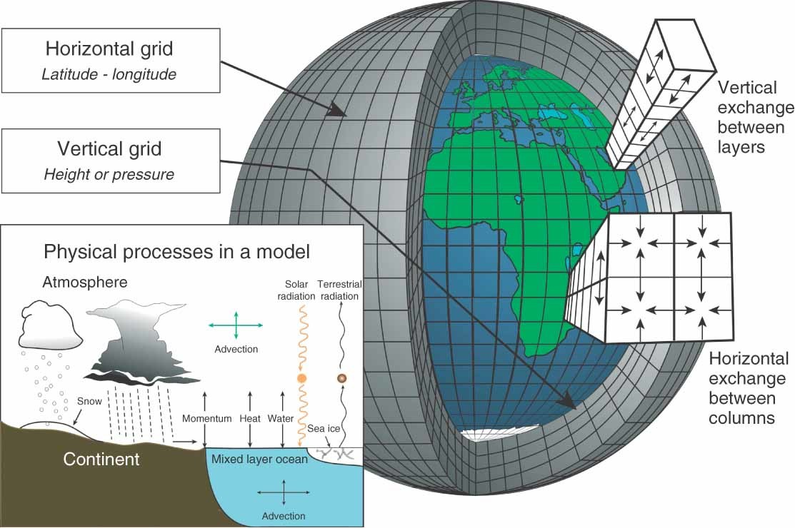
CMIP5 and temperature projections
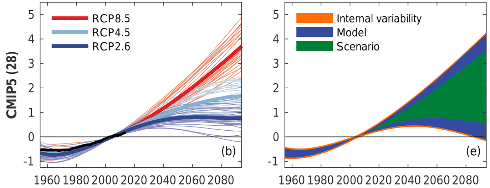
Source:
Lehner et al. 2020. “Partitioning
Climate Projection Uncertainty with Multiple Large Ensembles and CMIP5/6.” Earth System Dynamics
11 (2): 491–508.
https://doi.org/10.5194/esd-11-491-2020.
CMIP6 and temperature projections
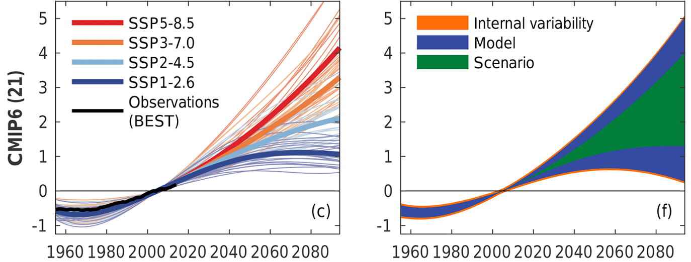
Source:
Lehner et al. 2020. “Partitioning
Climate Projection Uncertainty with Multiple Large Ensembles and CMIP5/6.” Earth System Dynamics
11 (2):
491–508.
https://doi.org/10.5194/esd-11-491-2020.
But we still need observations and statistical models
- To check wether climate models are consistents with observations
- To link climate models and observations
- To infer quantities of interest
Attribution of Global Mean Surface Temperature Trends
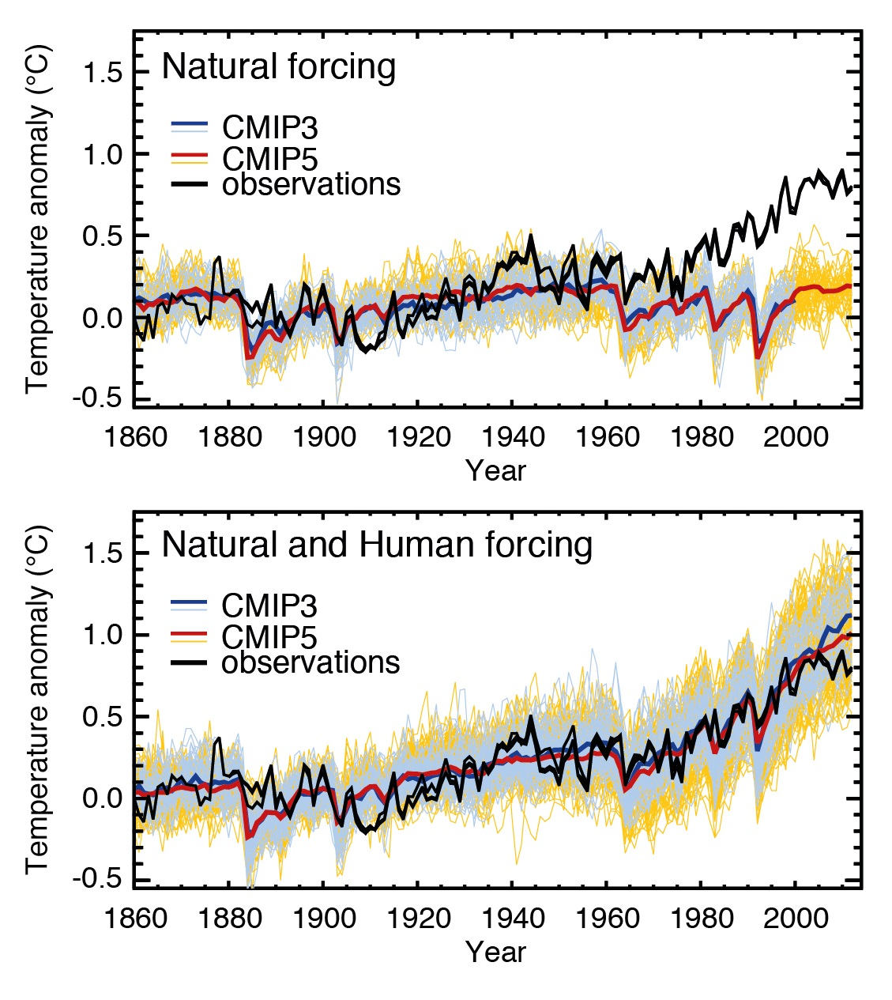
Source:
IPCC AR5, FAQ 10.1, Figure 1 |
Statistical Model
$$ \begin{array}{ll} Z^* = \mu + \sum_{i = n}^N \beta_i R_i^* \\ Z = Z^* + \varepsilon_Z \\ R_i = R_i^* + \varepsilon_{R_i} \quad \text{for } i = 1, ..., N.\\ \end{array} $$$Z$ is the climate state observed at a given time, which is therefore impacted by climate internal variability $\varepsilon_Z$.
$R_i$ is a response to forcing $i$ simulated by a climate model. It includes the contribution of the internal variability $\varepsilon_{R_i}$ simulated by the climate model.
Attribution of Extreme Events
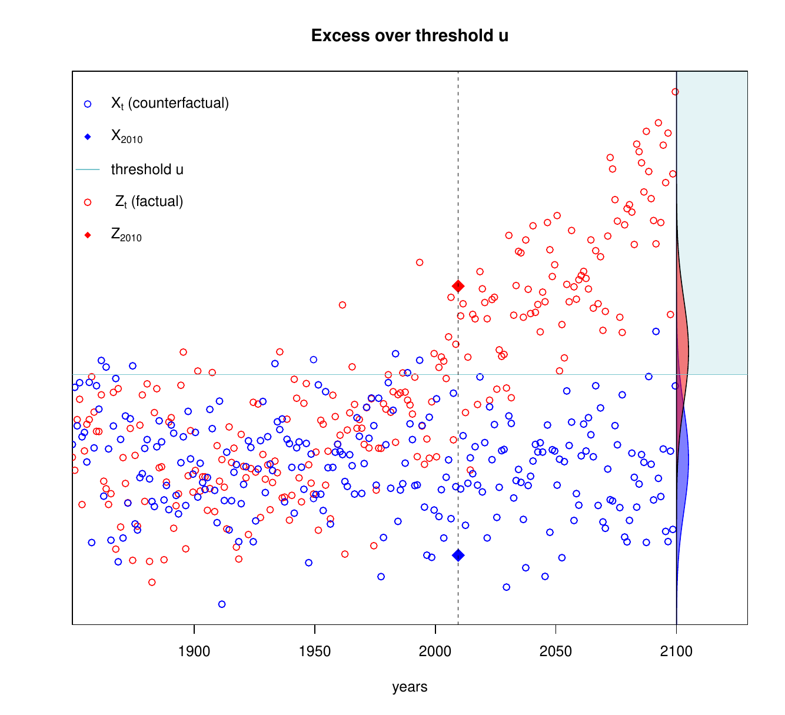
Defining the event (only univariate)
- Define the climate variable of interest.
e.g. temperature, precipitation, ... - Define the spatio-temporal aggregation.
e.g. maximum over Europe of 10-day temperature averages - Define the conditioning.
e.g. only during JJA, only for NAO+ circulation type, ... - Define the threshold
e.g. based on recent event
More on this:
Cattiaux, J. and A. Ribes, 2018: Defining Single Extreme Weather Events in a Climate
Perspective. Bull. Amer. Meteor. Soc., 99, 1557–1568,
https://doi.org/10.1175/BAMS-D-17-0281.1
Case study: 2019 July Heatwave in France
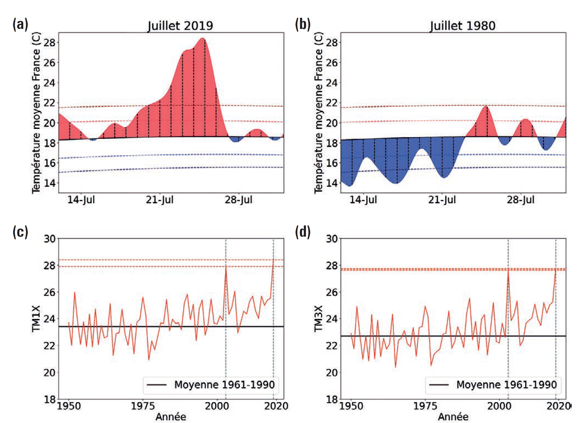Event definition:
Annual maxima of 3-day average temperature anomalies in France, i.e. [42N - 51N] x [5W -10E] above +4.98 K.
Source:
Robin, Yoann ; Drouin, Agathe ; Soubeyroux, Jean-Michel ; Ribes, Aurélien ; Vautard, Robert.
Comment attribuer une canicule au changement climatique ?. La Météorologie, 115, 28-36,
2021.
Data
Simulations from 26 models from the Coupled Model Intercomparison Project 5 (CMIP5).
Data are extracted for the experiences:
- historical, corresponding to the climate in the factual world (1850-2005)
- rcp2.5, rcp8.5, corresponding to climate projections for the future of the factual world(2006-2100)
Météo-France thermal index is used as observation. It corresponds to the average of observations from 30 ground stations, showing data available between 1947 and 2019
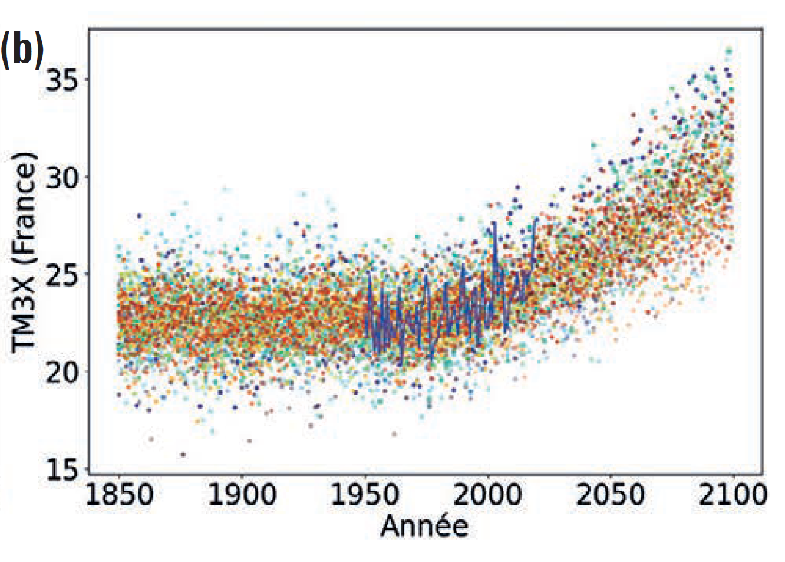Generalized Extreme Value distribution
The model focuses on the statistical behavior of $$M_n = max\{X_1 , ... , X_n\},$$ where $X_l, ... , X_n$, is a sequence of independent random variables having a common distribution function $F$
Theorem
If there exist sequences of constants $\{a_n > 0\}$ and $\{b_n\}$ such that
$$ \mathbb{P}\{(M_n - b_n)/a_n \leq z \} \rightarrow G(z) \text{ as } n \rightarrow \infty
$$
for a non-degenerate distribution function $G$, then $G$ is a member of the GEV family
$$ G(z) = \exp\left\{-\left[1 + \xi \left(\frac{z -
\mu}{\sigma}\right)\right]^{-1/\xi}\right\},$$
defined on $\{z : 1 + \xi (z - \mu) / \sigma \geq 0\}$, where $-\infty < \mu < \infty$, $\sigma> 0$
and
$-\infty < \xi < \infty$ $\Box$
Bayesian Model
Factual world
$$\begin{aligned} Z_t &\sim GEV(\mu_0 + \mu_1 C^{F}_t, exp(\sigma_0 + \sigma_1 C^{F}_t), \xi) \\ C^{F}_t &= C^{NAT}_t + C^{ANT}_t + \epsilon_{IV} \\ \epsilon_{IV} &\sim \mathcal{N}(0, \sigma_{IV}^2) \end{aligned}$$
Counterfactual world
$$\begin{aligned} X_t &\sim GEV(\mu_0 + \mu_1 C^{CF}_t, exp(\sigma_0 + \sigma_1 C^{CF}_t), \xi) \\ C^{CF}_t &= C^{NAT}_t + \epsilon_{IV} \\ \epsilon_{IV} &\sim \mathcal{N}(0, \sigma_{IV}^2) \end{aligned}$$
Prior distribution
$$\begin{aligned} \theta &= [\mu_0, \mu_1, \sigma_0, \sigma_1, \xi, C^{NAT}, C^{ANT}] \\ &\sim \mathcal{N}(\mu_\theta, \sigma_\theta^2) \end{aligned}$$
We use the distribution of the CMIP5 models as prior
GEV fits
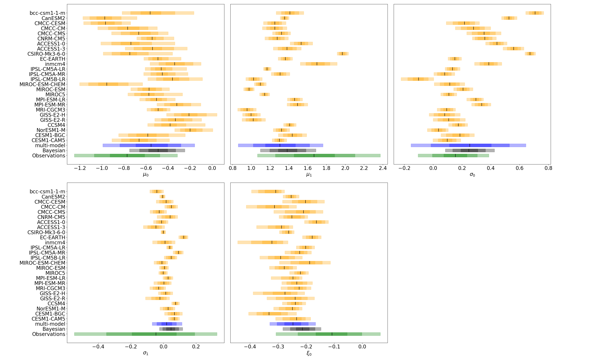
Global Mean Surface Temperature as covariate
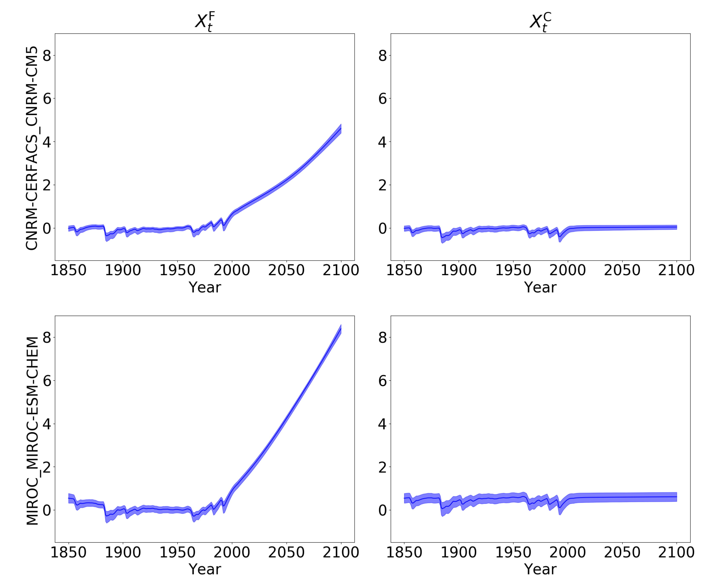
Posterior: change in probability
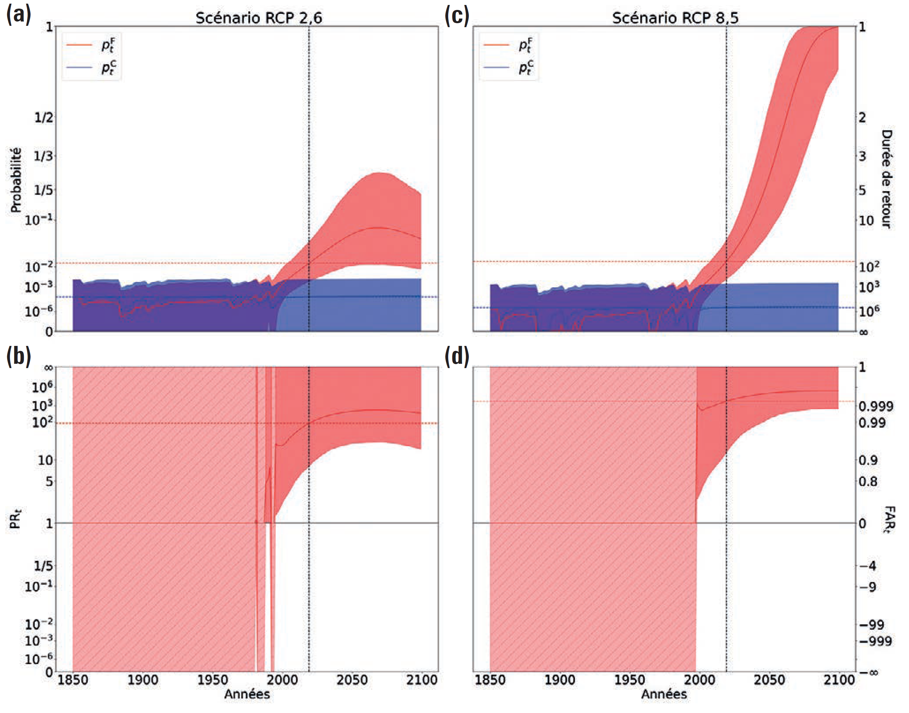
Posterior: change in intensity
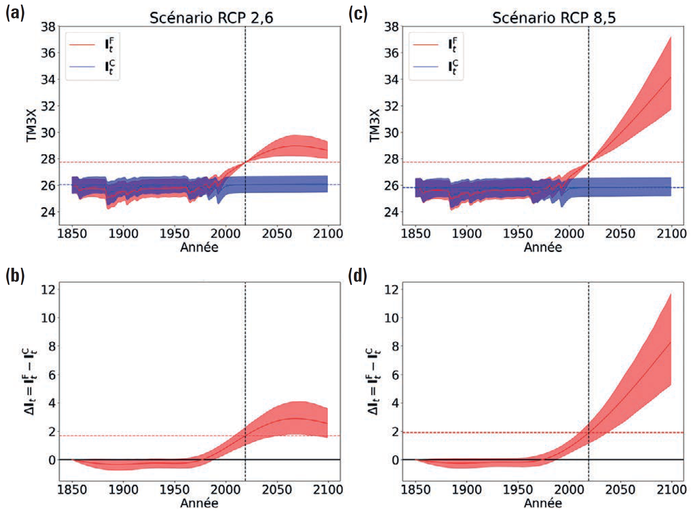
Conclusions of the case study
"currently the risk of occurrence of this type of heat wave has been multiplied by at least 10"
"In 2040 it will be multiplied by at least 20".
"in the best case (rcp2.5) we return to the current situation in 2100"
Source:
Robin, Yoann ; Drouin, Agathe ; Soubeyroux, Jean-Michel ; Ribes, Aurélien ; Vautard, Robert.
Comment attribuer une canicule au changement climatique ?. La Météorologie, 115, 28-36,
2021.
Let's take a few steps back
Event attribution is about comparing two distributions
- Counterfactual $$ \mbox{ Sample $\bf X$} \mbox{ with } {\color{green} G}(x)=\mathbb{P}(X \leq x) $$
- Factual $$ \mbox{ Sample $\bf Z$} \mbox{ with } {\color{purple} F}(z)=\mathbb{P}(Z \leq z) $$
Hard to do with observations...
- We never observe $\bf X$ for the counterfactual climate
- Often lack of available data $\bf Z$ for the factual climate
... and models have biases...
- Counterfactual world from model $m$ $$ \mbox{ Sample $\bf X^{(m)}$} \mbox{ with } {\color{green} G}^{(m)}(x)=\mathbb{P}(X^{(m)} \leq x) % \mbox{ \& }{\color{green} p_0}(u)=\mathbb{P}(X >u ) $$
- Factual world from model $m$ $$ \mbox{ Sample $\bf Z^{(m)}$} \mbox{ with } {\color{purple} F}^{(m)}(z)=\mathbb{P}(Z^{(m)} \leq z) %\mbox{ \& }{\color{purple} p_1}(u)=\mathbb{P}(Z >u )$$
Statistical bias correction
Linking factual and counterfactual truth with their numerical approximations
$$ X \overset{d}{=} \left( G^{\leftarrow} \circ G^{(m)} \right) \left( X^{(m)} \right) $$ and $$ Z \overset{d}{=} \left( F^{\leftarrow} \circ F^{(m)} \right)\left( Z^{(m)} \right) $$ where $G^{\leftarrow}(.)$ the inverse of $G$, i.e. the quantile function. All variables are assumed to be continuous.
A fundamental condition in D&A
$$ A: \;\; F^{\leftarrow} \circ F^{(m)} = G^{\leftarrow} \circ G^{(m)}$$
Climatological interpretation
The discrepancy between numerical model $m$ and the true world stays the same in the factual and counterfactual worlds.
Mathematical consequence of $A$
Under $A$, it is possible to easily make relative comparisons of probabilities
Change of lenses: relative comparison of probabilities
Instead of studying exceedance probabilities like $$ \color{green}{p_0(t)} = \mathbb{P}(X_t > u ) \; \text{ and } \; \color{purple}{p_1(t)}=\mathbb{P}(Z_t > u ),$$
we will estimate and interpret record probabilities like $$ \color{green}{p_{0,r}(t)} = \mathbb{P}(X_t > \max(X_{t-1}, X_{t-2}, \dots, X_{t-r+1})) $$ and $$\color{purple} {p_{1,r}(t)} = \mathbb{P}(Z_t > \max(X_{t-1}, X_{t-2}, \dots, X_{t-r+1})) $$ where the usual threshold $u$ has been replaced by $ \max(X_{t-1}, X_{t-2}, \dots, X_{t-r+1})$.
Records in the counterfactual world:
$\color{green}{p_{0,r}(t)} = \mathbb{P}(X_t > \max(X_{t-1}, \dots, X_{t-r+1})) $
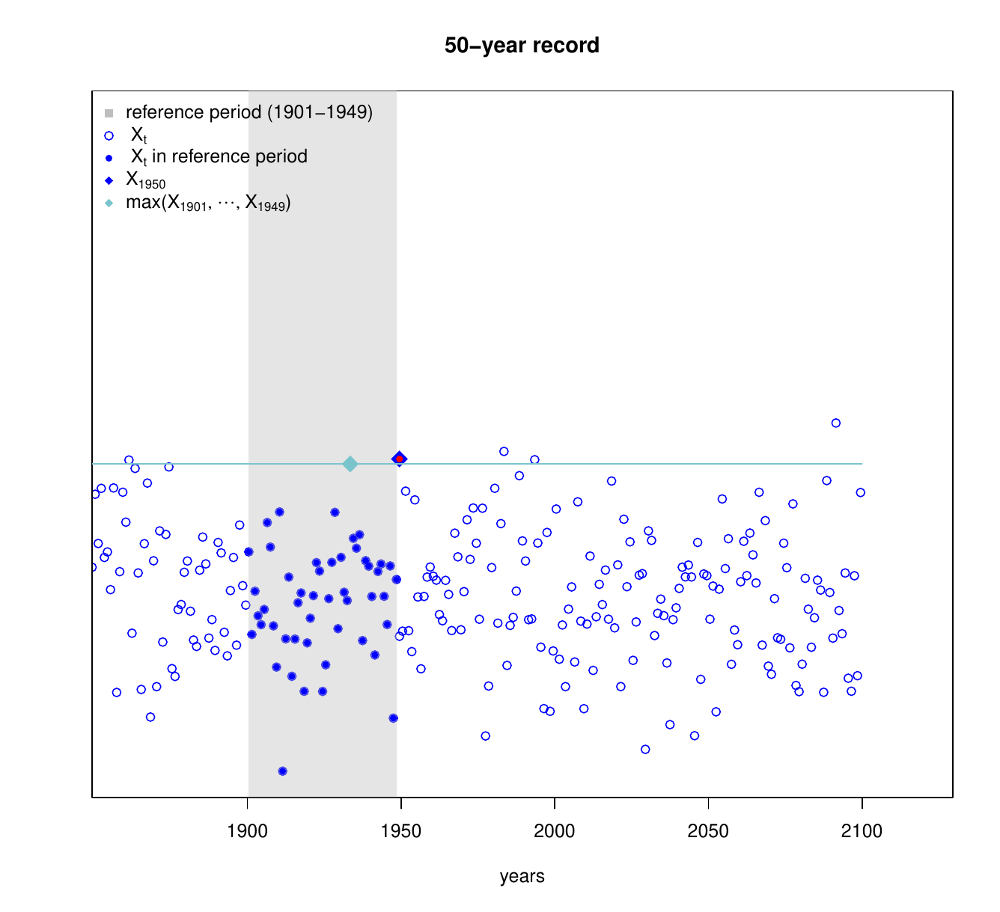
Records in the counterfactual world:
$\color{green}{p_{0,r}(t)} = \mathbb{P}(X_t > \max(X_{t-1}, \dots, X_{t-r+1})) $

Exchangeable random sequences
$$\mathbb{P}( X_t > \max(X_{t-1}, X_{t-2}, \dots, X_{t-r+1})) = \frac{1}{r}$$
- No need to view data to compute this probability of record: universal yardstick
- This equality is relative and does not depend on the marginal type: bypassing bias-correction
Can a factual realization be a record in the counterfactual world?
$\color{purple}{p_{1,r}(t)} = \mathbb{P}(Z_t > \max(X_{t-1}, \dots, X_{t-r+1}))$
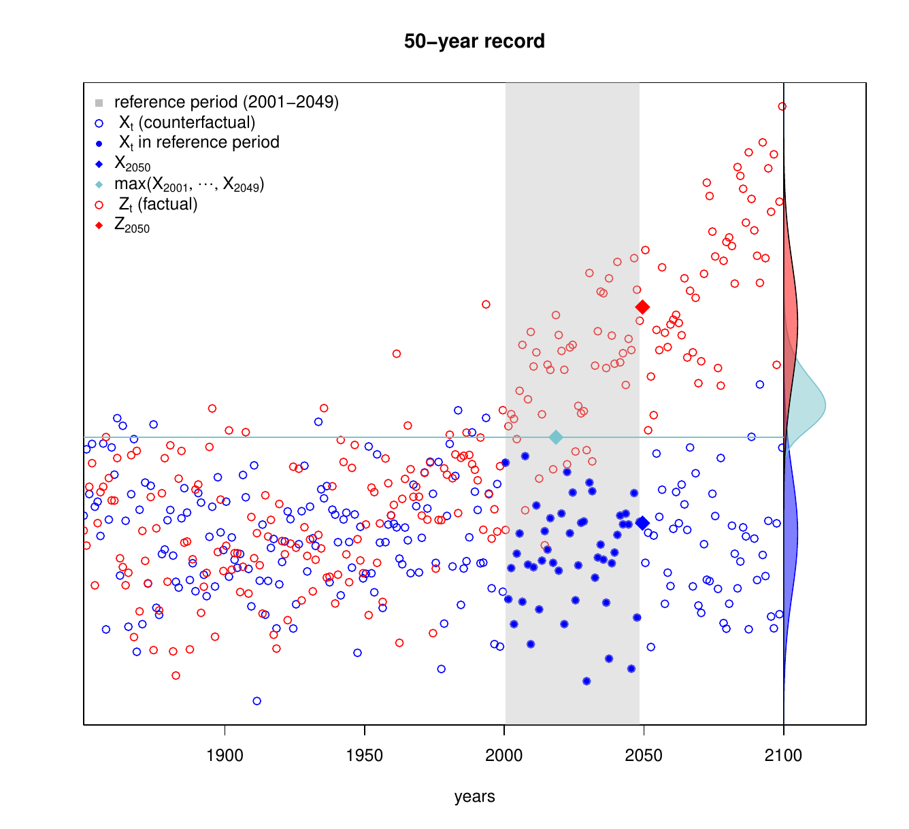
Under exchangeability of $X_t$ and assumption $A$
$$ \color{purple} {p_{1,r}(t)} = \color{purple} {p_{1,r}(t)^{(m)}}. $$
Under $A$, there is no need to correct Model $m$. Huge gain!!!
We can just average estimates from the different models that respect assumption $A$,
Indeed,
$$ \begin{aligned} \color{purple} {p_{1,r}(t)^{(m)}} & = \mathbb{P}(Z_t^{(m)} > \max(X_{t-1}^{(m)}, \dots, X_{t-r+1}^{(m)})) \\ & = \mathbb{P}(Z_t^{(m)} > X_{t-1}^{(m)}, \dots, Z_t^{(m)} > X_{t-r+1}^{(m)}) \\ & = \mathbb{P}\left(G^{\leftarrow} \circ G^{(m)}(Z_t^{(m)}) > G^{\leftarrow} \circ G^{(m)}(X_{t-1}^{(m)}), \dots, G^{\leftarrow} \circ G^{(m)}(Z_t^{(m)}) > G^{\leftarrow} \circ G^{(m)}(X_{t-r+1}^{(m)}) \right)\\ & \stackrel{A}{=}\mathbb{P}\left(F^{\leftarrow} \circ F^{(m)}(Z_t^{(m)}) > G^{\leftarrow} \circ G^{(m)}(X_{t-1}^{(m)}), \dots, F^{\leftarrow} \circ F^{(m)}(Z_t^{(m)}) > G^{\leftarrow} \circ G^{(m)}(X_{t-r+1}^{(m)}) \right)\\ & = \mathbb{P}(Z_t > X_{t-1}, \dots, Z_t > X_{t-r+1}) \\ & = \mathbb{P}(Z_t > \max(X_{t-1}, \dots, X_{t-r+1})) = \color{purple} {p_{1,r}(t)} \end{aligned} $$Distribution of $W= - \log {\color{green}{G}}(\color{purple}{Z})$ when $\color{green}{G}$ describes annual maxima and $\color{purple}{Z}$ too?
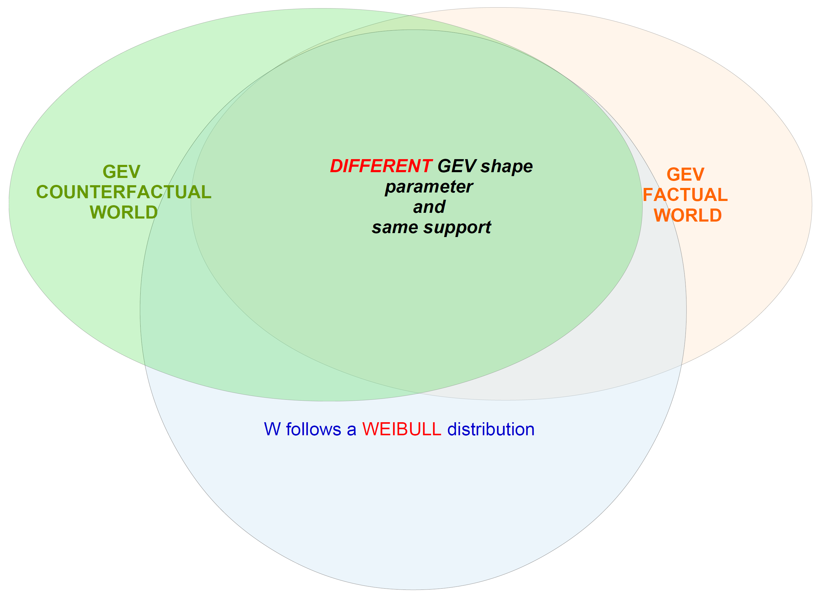If $\color{green}{X \sim GEV(\mu_X,\sigma_X, \xi_X)}$ and $\color{purple}{Z \sim GEV(\mu_Z,\sigma_Z, \xi_Z)}$ such that $$\color{green}{\mu_X - \frac{\sigma_X}{\xi_X}} = \color{purple}{\mu_Z - \frac{\sigma_Z}{\xi_Z}},$$ then $$ W= - \log {\color{green}{G}}(\color{purple}{Z}) \sim \mbox{Weibull}(k,\lambda)$$ with $k=\xi_X/\xi_Z$ and $\lambda= \left( k\times \sigma_Z/\sigma_X \right)^{-1/\xi_X}$.
Estimation algorithm of ${\color{purple} {p_{1,r}(t)}}$
Under Weibull assumption, $$p_{1,r}(t)=\int_0^1\exp(-(r-1)\color{red}{\lambda_t}(-\log x)^{1/\color{red}{k_t}})\,dx$$
Estimation algorithm:
- Step 1: $\forall \,t$, $$ \widehat{p_{1,2}}(t)=\sum_{j=1}^n \frac{K_h(t-t_k)}{\sum_{k=1}^n K_h(t-t_k)}\mathbb{G}(Z_{t_j}) \qquad \widehat{p_{1,3}}(t)=\sum_{j=1}^n \frac{K_h(t-t_k)}{\sum_{k=1}^n K_h(t-t_k)}\mathbb{G}^{2}(Z_{t_j})$$
- Step 2: for a chosen $t$, $$\begin{equation*} \left\lbrace \begin{array}{l} \widehat{p_{1,2}}(t)=\int_0^1\exp(-\color{red}{\hat{\lambda}_t}(-\log x)^{1/\color{red}{\hat{k}_t}})\,dx\\ \widehat{p_{1,3}}(t)=\int_0^1\exp(-2\color{red}{\hat{\lambda}_t}(-\log x)^{1/\color{red}{\hat{k}_t}})\,dx\,. \end{array} \right.\rightsquigarrow (\color{red}{\hat{k}_t},\color{red}{\hat{\lambda}_t})\end{equation*}$$
- Step 3: $$\widehat{p_{1,r}}(t)\leftarrow\int_0^1\exp(-(r-1)\color{red}{\hat{\lambda}_t}(-\log x)^{1/\color{red}{\hat{k}_t}})\,dx$$
Practical facts
- GEV distributions are never fitted in this study
- The Weibull goodness of fit can be checked
- We don't need to observe a record to compute a record probability
- Extrapolation can be done, i.e. take $r$ larger than the sample size
Yearly maxima of daily precipitation at Richmond grid-point (IPSL, SSP585)
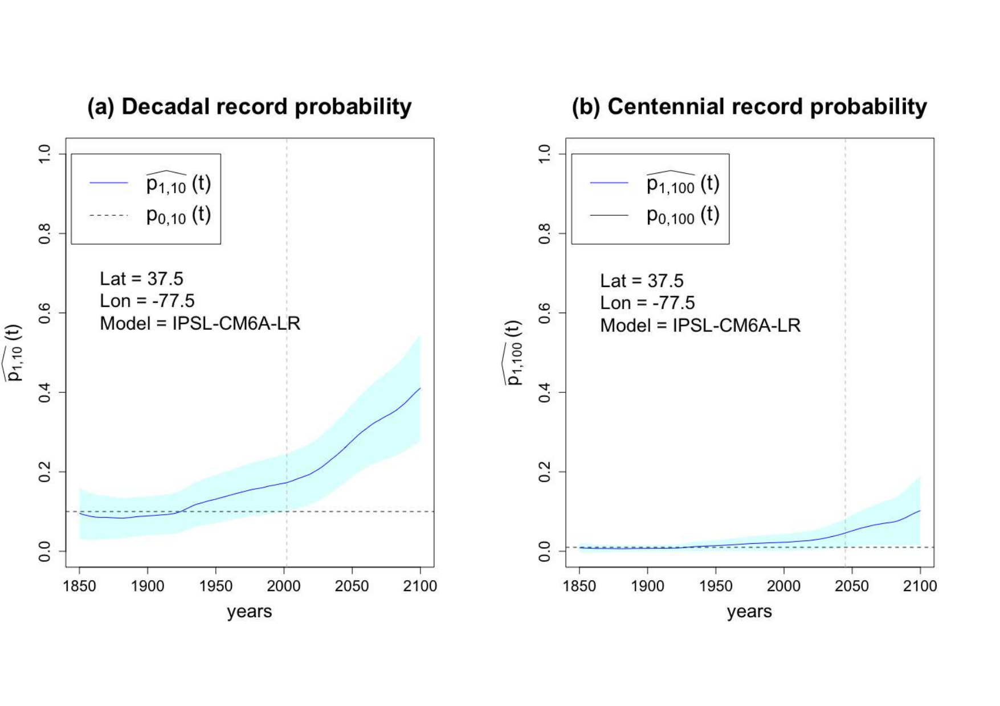Yearly maxima of daily precipitation (IPSL, SSS85)
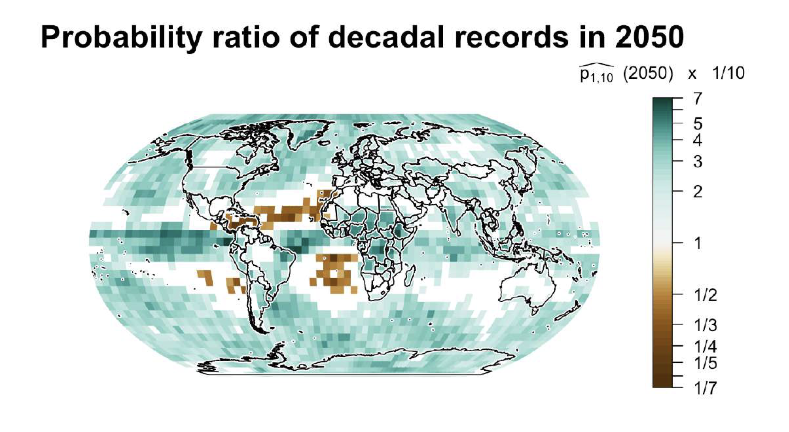How to check $A$
If we assume that there is a period of time, $T$, when the factual climate is like the counterfactual climate , i.e. $$ F_t \overset{d}{=} G \; \text{for} \; t \in T $$ then, for the period $T$, it implies that under $A$ $$ F^{\leftarrow} \circ F^{(m)} = G^{\leftarrow} \circ G^{(m)} \implies F^{\leftarrow} \circ F^{(m)} = F^{\leftarrow} \circ G^{(m)} \\ \color{red}{\implies F^{(m)} = G^{(m)}} $$ and that $$ \color{red}{p_{1,2}^{(m)} = 1/2 \; \text{for} \; t \in T} $$
Test for equality of distribution between samples $\{X_t^{(m)}: t \in T\}$ and $\{Z_t^{(m)}: t \in T\}$.
How to use the observations in the setup ?
Conclusion
- Uncertainties in observations and climate models: using only one source of data may not give robust results.
- How to combine models and observations depends on assumptions we make about the
relationship
between models and observations, e.g.:
- for threshold exceedances, climate simulations are used as a prior distri bution,
- for records, we use assumption $A: \;\; F^{\leftarrow} \circ F^{(m)} = G^{\leftarrow} \circ G^{(m)}$ that simplifies the inference.
- Extreme Event Attribution studies are limited by the quality of the data, e.g. observations availability and homogeneity or the resolution of climat models.
Some limits of the methods presented today
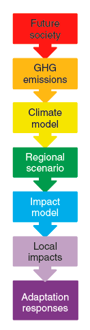
- Only for univariate yearly time-series.
- Further developments are needed for multivariate or compounds events, e.g. temporal and spatial dependencies.
- Only tackle the climate hazard part of the risk.
- Not usable for impact models that require time-series as inputs.